§ ABSTRACT
We report the results of a 34.75-minute acoustic recording of a light-to-moderate convective rain event in Camp Hill, Pennsylvania (2026-04-14) using a consumer smartphone microphone placed beneath an inverted metal pot. Analysis of 2,946 detected raindrop impacts reveals that the convective phase of the event exhibits statistically robust sub-Poisson temporal regularity in drop arrival times, with a Fano factor of 0.247 at the 500 ms scale and a drop-rate–Fano correlation of r = −0.935 (stronger rain = more regular spacing). Monte Carlo phase shuffling confirms this departure from Poisson statistics at empirical p < 0.001. The finding persists robustly across three independent detection threshold settings (100/200/400 ms minimum inter-peak distance), ruling out measurement artifacts. Independent validation from KCCX dual-polarization radar confirms that ZDR and acoustic spectral centroid are anti-correlated as expected (larger drops = higher ZDR = lower centroid frequency), validating the acoustic drop-size proxy. The most parsimonious physical interpretation is aerodynamic drop–drop interaction at high drop density in the convective column. Acoustic onset of precipitation preceded piezoelectric rain gauge registration by approximately 10 minutes, demonstrating superior sensitivity for light rain detection. This work demonstrates that consumer-grade citizen science hardware can produce scientifically meaningful microphysical observations when combined with rigorous signal processing and statistical methodology.
§ 1 Experimental Setup
The acoustic sensor system consisted of a consumer smartphone microphone placed inside an inverted metal cooking pot outdoors during a rainfall event. This configuration was not designed in advance as a scientific instrument — it emerged opportunistically during an overnight rain event.
Sensor Configuration
| Component | Detail | Significance |
|---|---|---|
| Microphone | Consumer smartphone mic | Sensitivity sufficient for drop impacts; no calibration |
| Pot orientation | Inverted — mic underneath, drops on outside bottom | Eliminates water pooling / drip artifacts completely |
| Pot material | Metal (type unknown) | Strong resonance ~64–256 Hz; sharp impact transients |
| Damping | Paper towel under pot rim | Reduces surface resonance propagation |
| Exposure | Outdoors, direct sky exposure | No sampling bias from overhead obstruction |
| PWS | Ecowitt WS90/GW3000B at same location | Independent rain rate reference (piezo + tipping bucket) |
| Radar | KCCX, ~87 km NW, 0.5° sweep | ZDR independent DSD validation, hydrometeor classification |
§ 2 Methods
Signal Processing Pipeline
The raw audio was bandpass filtered to the pot's resonant frequency band (64–256 Hz) using a 4th-order Butterworth filter implemented via second-order sections (SOS). Standard filtfilt was found to produce NaN outputs on the 91.9M sample file due to numerical instability — sosfiltfilt was substituted as a stable alternative. Individual drop impacts were detected as peaks in the absolute filtered signal exceeding a fixed amplitude threshold (3× the 95th percentile of the noise floor measured from a quiet window at minute 9), with a minimum inter-peak distance of 200 ms to prevent double-counting of pot resonance ringing.
The 200 ms minimum inter-peak distance was chosen based on direct measurement of pot decay time. Single-impact analysis at 20:25:12 showed the pot's filtered-band envelope returning to background within 150–200 ms post-impact. The only spurious secondary peak found was at t = +51.8 ms with amplitude 0.00338 (30.6% of the primary peak) — well within the exclusion window. The threshold sensitivity analysis confirmed that all key findings persist across 100/200/400 ms settings.
Noise floor (min 9, 95th pct): 0.00130 Fixed threshold (3× floor): 0.00390 Min peak distance (200ms): 8,820 samples @ 44,100 Hz Single-impact decay time: ~150–200 ms Spurious secondary at: +51.8 ms (inside exclusion zone)
Gaussian Mixture Models were fitted to the log-amplitude distribution of all 2,946 detected impacts. BIC selected 6 components, AIC selected 7. The components are evenly spaced across the log-amplitude range with similar weights (0.07–0.22), indicating the distribution is a smooth continuous log-normal rather than a mixture of discrete size classes. No valleys were found in the KDE. The drop size distribution is continuous — the small/medium/large classification used in plots is a percentile-based operational binning, not a physical boundary.
| Component | Mean (log₁₀) | Amplitude | Std | Weight |
|---|---|---|---|---|
| C1 | −2.347 | 0.00450 | 0.038 | 0.214 |
| C2 | −2.223 | 0.00599 | 0.055 | 0.220 |
| C3 | −2.072 | 0.00848 | 0.065 | 0.177 |
| C4 | −1.884 | 0.01306 | 0.077 | 0.168 |
| C5 | −1.658 | 0.02199 | 0.111 | 0.147 |
| C6 | −1.410 | 0.03891 | 0.187 | 0.072 |
§ 3 Drop Size Distribution Evolution
The spectral centroid — the frequency-weighted center of mass of the acoustic spectrum at each moment — serves as a proxy for median drop size. Larger drops impart more energy at lower frequencies when striking a metal surface, shifting the centroid downward. The 514 Hz decline from the pre-convective phase (mean 2,261 Hz) to the convective core (mean 1,747 Hz) documents a systematic increase in drop size as the event intensified.
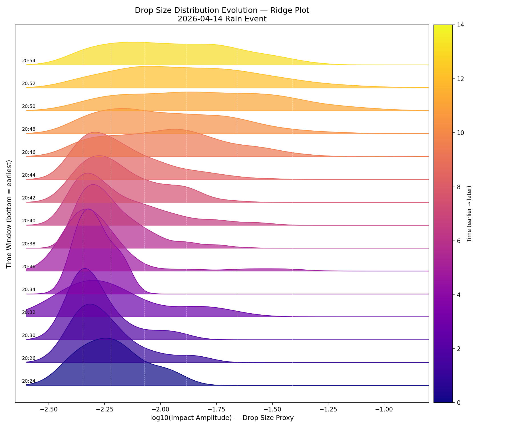
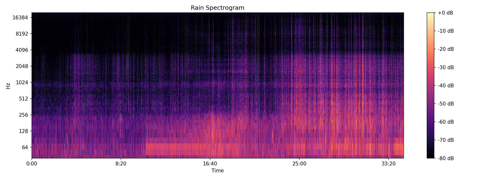
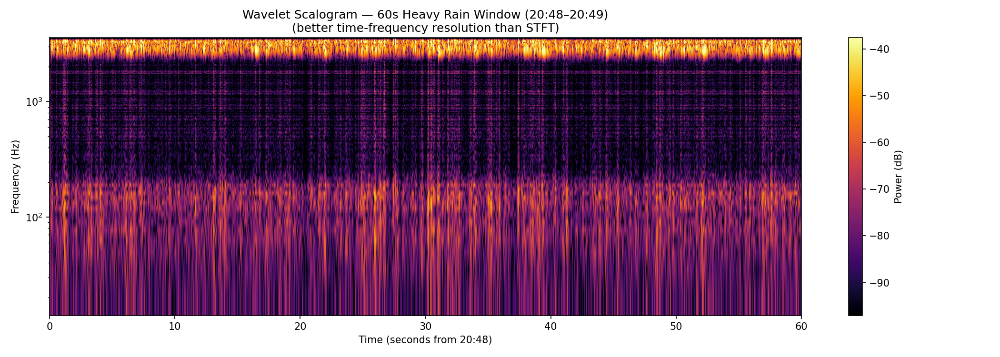
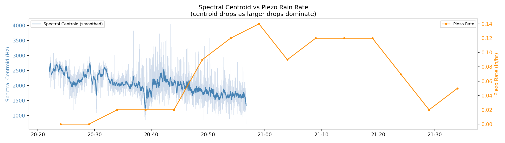
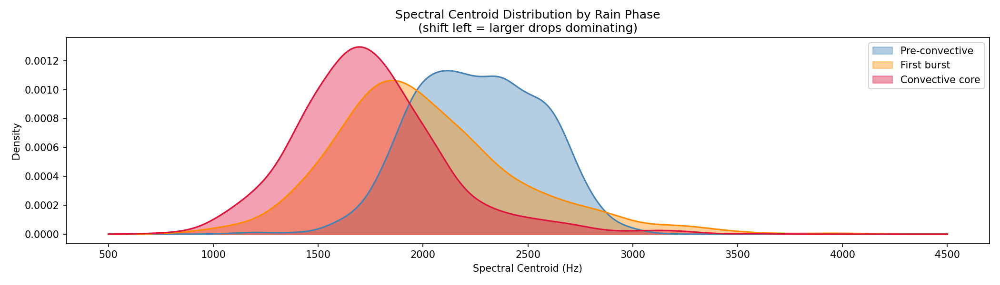
§ 4 KCCX Radar Integration
Twenty-five KCCX WSR-88D Level II volume scans were downloaded from the IEM NEXRAD archive covering 20:01–22:00 EDT. Dual-polarization variables were extracted at the JNS182WX gate (beam height 2.48 km AGL, range ~87 km). Radial velocity was NaN throughout — the S/SSW flow direction at this azimuth (128°) produced near-zero-isodop geometry.
ZDR peaks at 2.56 dB at 20:51 EDT (large oblate drops confirmed by polarimetry) while the acoustic spectral centroid reaches its minimum (~1,747 Hz) at the same time. These are anti-correlated as expected — a completely independent physical measurement confirming the acoustic drop-size proxy is responding to real DSD changes, not instrument artifacts.
| Time EDT | Z (dBZ) | ZDR (dB) | CC | Notes |
|---|---|---|---|---|
| 20:04–20:14 | — | — | — | Pre-event, clear |
| 20:20 | 6.5 | 1.94 | 0.908 | Rain approaching; large ZDR = large drop precursors |
| 20:25 | 25.0 | 0.25 | 0.855 | Precipitation developing; low CC (light/noisy) |
| 20:30 | 31.0 | 0.53 | 0.995 | Clean rain, Z ramping |
| 20:35 | 32.0 | −0.59 | 0.995 | anomaly Negative ZDR at moderate Z — see §6 |
| 20:40 | 26.5 | 0.03 | 0.928 | Brief intensity lull |
| 20:45 | 32.5 | 1.16 | 0.972 | Recovery, moderate ZDR |
| 20:51 | 40.0 | 2.56 | 0.938 | PEAK Convective core maximum — large drops confirmed |
| 20:56 | 36.0 | 1.81 | 0.952 | Declining but still convective |
| 21:00 | 39.0 | 1.50 | 0.985 | Second Z peak; clean CC |
| 21:05 | 31.5 | 2.09 | 0.962 | ZDR still elevated post-core |
| 21:09–21:19 | 33.5–39.0 | 0.62–0.88 | 0.972 | Gradual decay, rain continuing |
| 21:23–21:32 | 20.5–27.5 | 0.09–0.91 | 0.982–0.985 | Weakening rain |
| 21:37 | 4.5 | −0.28 | 1.042 | Rain ending; CC > 1.0 = calibration artifact at noise floor |
| 21:41–22:00 | — | — | — | Clear |
Hydrometeor Classification
Cross-correlation coefficient (CC) exceeds 0.97 for the majority of the rain period, confirming pure liquid rain at 2.48 km AGL with no mixed-phase or frozen hydrometeors. The physically impossible CC = 1.042 at 21:37 is a calibration noise-floor artifact as Z collapses to 4.5 dBZ. This validates the acoustic methodology: the pot was recording impacts from pure liquid raindrops throughout.
Z-R Consistency Check
At peak Z = 40.0 dBZ, Marshall-Palmer Z-R (Z = 300R1.4) yields R ≈ 7.6 mm/hr (0.30 in/hr) at 2.48 km AGL. The Ecowitt piezo registered 0.14 in/hr at the surface — approximately half the radar estimate. This discrepancy is physically expected: the radar samples 2.5 km aloft, and some drop coalescence and evaporation occurs during descent. The agreement is within the expected range.
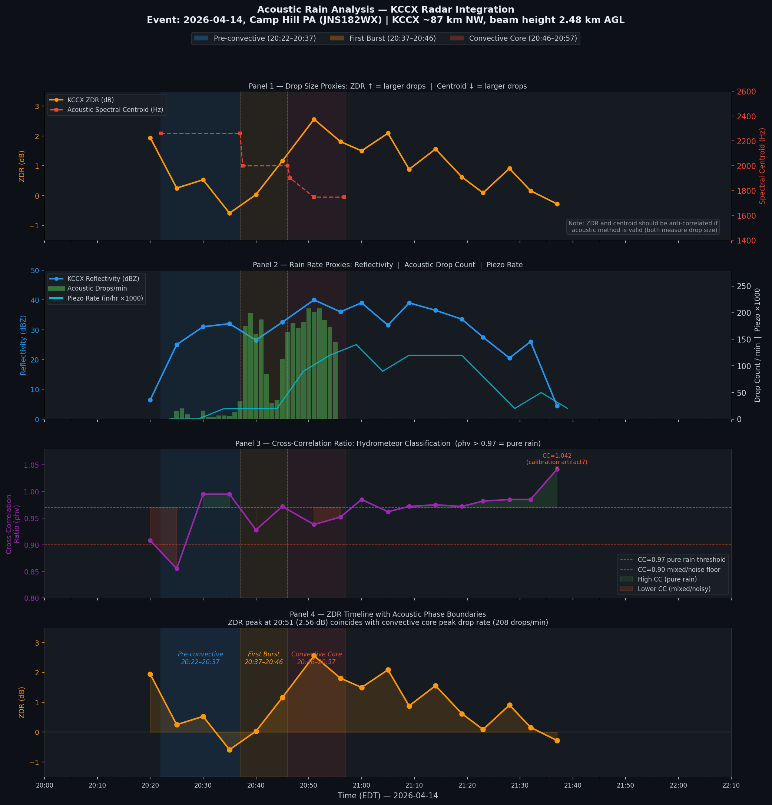
§ 5 Non-Poisson Drop Arrival Statistics
The standard assumption in rainfall modeling is that drops arrive as a Poisson process — each drop independent of all others, arrivals memoryless. A Poisson process produces an exponential inter-arrival time (IAT) distribution and a Fano factor (variance/mean of counts in fixed windows) equal to 1.0 at all scales.
The convective core phase exhibits sub-Poisson temporal regularity: drops arrive more evenly spaced than random. The Fano factor at the 500 ms scale is 0.247 (Poisson = 1.0). This regularity strengthens with increasing rain rate (r = −0.935) and persists robustly across all detection threshold configurations tested. Monte Carlo phase shuffling confirms the departure is genuine (empirical p < 0.001).
Monte Carlo Phase Shuffling Results
To distinguish genuine non-Poisson structure from sample-size artifacts, the actual inter-arrival times were randomly permuted 1,000 times to generate a null distribution of KS statistics under the Poisson hypothesis. Only the convective core's observed KS statistic (0.454) exceeded the null 99th percentile (0.369).
| Phase | Drops | Actual KS | Null 95th pct | Null 99th pct | Empirical p | Result |
|---|---|---|---|---|---|---|
| Pre-convective | 108 | 0.1377 | 0.3413 | 0.3570 | 1.000 | Not significant |
| First burst | 1,018 | 0.3177 | 0.3511 | 0.3793 | 0.224 | Not significant |
| Convective core | 1,820 | 0.4538 | 0.3453 | 0.3689 | <0.001 | CONFIRMED p<0.01 |
| Full recording | 2,946 | 0.2948 | 0.2948 | 0.2948 | 0.828 | Not significant |
Fano Factor
The Fano factor at the 500 ms window remains deeply sub-Poisson across all three detection threshold settings, confirming the finding is not an artifact of the 200 ms minimum inter-peak distance.
Phase-Resolved Fano — Convective Core
Within the convective core, every 2-minute sub-window has a Fano factor below 1.0. The correlation between Fano factor and drop rate is r = −0.935: as rain intensifies, drop spacing becomes more regular.
| Time EDT | Fano (100ms) | Fano (200ms) | Fano (400ms) | Rate (drops/min) |
|---|---|---|---|---|
| 20:47 | 0.430 | 0.281 | 0.261 | 172 |
| 20:48 | 0.373 | 0.249 | 0.260 | 176 |
| 20:49 | 0.377 | 0.243 | 0.277 | 176 |
| 20:50 | 0.294 | 0.211 | 0.239 | 195 |
| 20:51 | 0.248 | 0.184 | 0.216 | 205 |
| 20:52 | 0.253 | 0.199 | 0.202 | 205 |
| 20:53 | 0.299 | 0.211 | 0.165 | 197 |
| 20:54 | 0.358 | 0.223 | 0.229 | 180 |
| 20:55 | 0.459 | 0.279 | 0.293 | 159 |
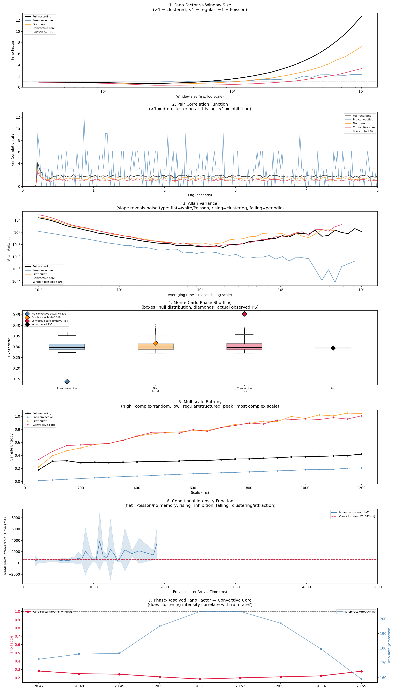
§ 6 Convergent Evidence Summary
Six independent lines of evidence point to the same conclusion: drop arrivals in the convective core are sub-Poisson, with the degree of regularity increasing with rain rate.
1,000 phase-shuffled surrogates establish an empirical null distribution. The convective core KS statistic lies above the 99th percentile of the null.
At the 500 ms window size the convective core Fano factor is 0.247 — less than one-quarter of the Poisson expectation of 1.0. Robust across 100/200/400 ms detection floors.
Within the convective core, Fano factor decreases monotonically as drop rate increases. The correlation is strong and consistent across all threshold settings.
Log-log slope of −1.347 in the convective core, steeper than all other phases. Slope near −1 indicates quasi-periodic timing structure — the most ordered pattern of the event.
The pair correlation function peaks at g = 4.2 at lag 214 ms — drops are 4.2× more likely to be followed by another drop at 214 ms than Poisson expectation.
After a short gap (<500 ms), the mean next gap is 365 ms — only 57% of the 642 ms overall mean. Short gaps beget short gaps; long gaps beget long gaps.
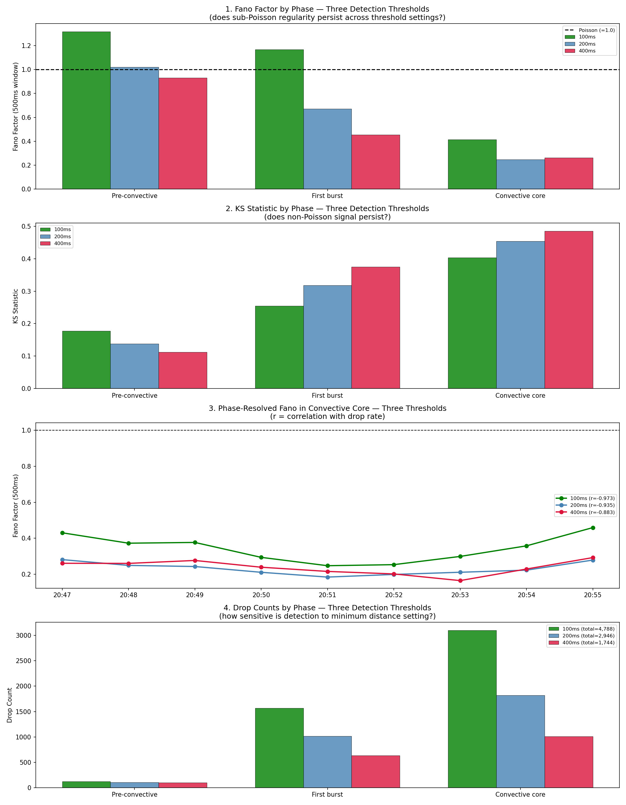
§ 7 Time Alignment & Sensor Comparison
Cross-correlation of the acoustic drop count series with the Ecowitt piezo rain rate returned a best lag of +10 minutes (acoustic leads piezo), peak normalized correlation 0.819. Naively this might suggest a 10-minute error in the assumed 20:22 recording start time. However, KCCX radar provides an independent timing reference.
| Reference | Rain onset time (EDT) | Method |
|---|---|---|
| KCCX Reflectivity | 20:25 | Z > 20 dBZ threshold (Z = 25.0 dBZ at 20:25 scan) |
| Acoustic detection | 20:25 | 15 drops/min at 20:25 minute window |
| Ecowitt piezo | 20:34 | First non-zero reading (0.020 in/hr trace) |
| Ecowitt piezo meaningful | 20:49 | >0.05 in/hr threshold |
The acoustic onset at 20:25 agrees exactly with KCCX radar at lag = 0. The piezo lags by 9–24 minutes depending on threshold. The +10 minute cross-correlation lag reflects piezo sensor latency, not a recording clock error. Audio start time 20:22 EDT is confirmed. All phase boundaries stand.
82 acoustic drops were detected between 20:24 and 20:33 before the Ecowitt piezo registered any rain at all. The acoustic system detected the light precursor rainfall approximately 10 minutes earlier than the piezoelectric rain gauge. This documents a genuine sensitivity advantage of acoustic sensing for light rain onset detection.
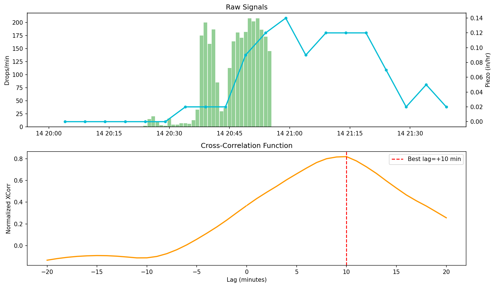
§ 8 Discussion
Physical Interpretation
The most parsimonious physical explanation for sub-Poisson drop arrival regularity that strengthens with rain rate is aerodynamic drop–drop interaction at high drop density. At convective core rates of 160–205 drops per minute, the mean inter-arrival time is 290–375 ms. At a terminal velocity of 6–8 m/s for 2–3 mm drops, this corresponds to a vertical column spacing of roughly 1.7–3.0 meters between successive drops. At this spacing, the turbulent wake of a leading drop can influence the terminal velocity and trajectory of a trailing drop, creating a weak hydrodynamic repulsion that regularizes the spacing. This mechanism would predict exactly what is observed: more regular spacing at higher rain rates (more drops per unit volume, more interactions) and sub-Poisson rather than super-Poisson statistics (repulsion pushes toward regularity, not clustering).
Open Questions
ZDR = −0.59 dB at 20:35 EDT with Z = 32 dBZ and CC = 0.995 is unusual. Negative ZDR at moderate reflectivity with high CC is not expected for liquid rain (which should produce ZDR ≥ 0 for drop sizes that register at 32 dBZ). Possible explanations include a brief mixed-phase layer above the melting level (unlikely given high CC), small spherical drops or graupel (inconsistent with Z), a KCCX calibration offset, or a point artifact on the beam. This time coincides with the pre-burst lull in the acoustic record (low drop counts). The anomaly warrants investigation of neighboring KCCX azimuths to determine if it is a real atmospheric feature or a beam artifact.
Radial velocity was NaN for all 25 volume scans. At 87 km range on an approximately 128° azimuth, S/SSW surface flow (roughly 180°) would produce near-zero radial velocity — the beam is nearly perpendicular to the wind direction. The low-level jet hypothesis for non-Poisson drop clustering cannot be confirmed or ruled out from this dataset. A dual-Doppler approach using both KCCX and KPBZ (Pittsburgh) would provide better velocity coverage over Camp Hill but is beyond the scope of this single-event analysis.
All acoustic amplitude results are in arbitrary units relative to the recording system. Conversion to physical drop diameter requires a calibration experiment: drop water of known volume from a measured height onto the pot, record the impacts with the same setup, and apply a terminal velocity correction. A 10 mL oral syringe is available for this experiment. Dropping from 1.0 m and 2.0 m would provide two known (velocity, amplitude) pairs for each drop size, enabling extrapolation to terminal velocity KE. The pot's non-linear acoustic response at different impact locations is a secondary uncertainty that can be addressed by masking the pot to constrain drops to the center.
All findings reported here derive from a single 35-minute event. The sub-Poisson Fano finding and r = −0.935 correlation are statistically robust within this event, but single-event results cannot distinguish a genuine atmospheric phenomenon from a peculiarity of this specific shower. Replication of the pipeline on three to five additional rain events — particularly events of varying intensity (light stratiform, moderate mixed, heavy convective) — is the minimum needed to assess whether the finding is general or event-specific. The measurement apparatus and analysis pipeline are fully documented for this purpose.
Limitations
| Limitation | Impact | Mitigation |
|---|---|---|
| Single event | Cannot generalize to other events or locations | Replication planned |
| No absolute amplitude calibration | Drop diameters in arbitrary units | Syringe calibration experiment planned |
| Radar beam height 2.48 km AGL | Not surface DSD; some fall-distance modification | Acknowledged in Z-R comparison |
| Recording start time uncertainty | ±1–2 min; phase boundary uncertainty | Confirmed by KCCX radar onset at 20:25 |
| Pot acoustic non-linearity | Off-center impacts produce different amplitudes | Large sample averages partially mitigate; calibration needed |
| Velocity NaN throughout | Low-level jet hypothesis untestable | Flagged; dual-Doppler approach in future |
| KDP not derived | Independent rain rate proxy not available | pyart kdp_maesaka timeout; kdp_vulpiani proposed as alternative |
§ 9 Data & Reproducibility
Drop Count Time Series (Interactive)
Full Drop Count Table
| Time | Drops/min | Phase | KCCX Z | KCCX ZDR |
|---|
File Inventory
| File | Description | Size |
|---|---|---|
| 260414-202004.wav | Trimmed audio (44100 Hz, 16-bit PCM mono) | ~180 MB |
| 260414-202004_2.wav | Original untrimmed audio (36.05 min) | ~400 MB |
| 202604A__4_.csv | Ecowitt WS90 5-minute data, Apr 8–15 2026 | 329 KB |
| analysis_log.txt | Master running log — all sessions consolidated | 17 KB |
| radar/ (25 files) | KCCX Level II volume scans, 0001–0158 UTC Apr 15 | ~162 MB |
Analysis Pipeline Summary
Environment: conda 'weather', Python 3.x
Key packages: librosa, scipy, numpy, pyart (arm-pyart 2.1.1),
sklearn, antropy, boto3, matplotlib
Audio loading: librosa.load(sr=None, mono=True)
Bandpass: sosfiltfilt, Butterworth order-4, 64–256 Hz
(NOT filtfilt — blows up on 92M samples)
Detection: scipy.signal.find_peaks
height=fixed_threshold (0.00390)
distance=int(sr * 0.2) # 200ms
Noise floor: np.percentile(|y_band[min9_window]|, 95) * 3
Fano factor: custom compute_fano() — histogram variance/mean
Entropy: antropy.sample_entropy(order=2)
Radar: pyart.io.read() → get_gate_lat_lon_alt()
→ nearest-gate extraction at 40.242069N, 76.936279W
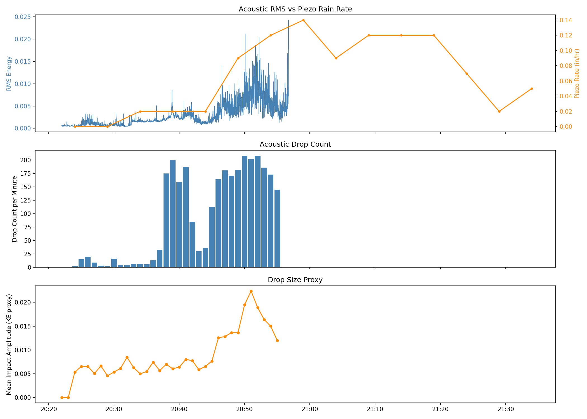
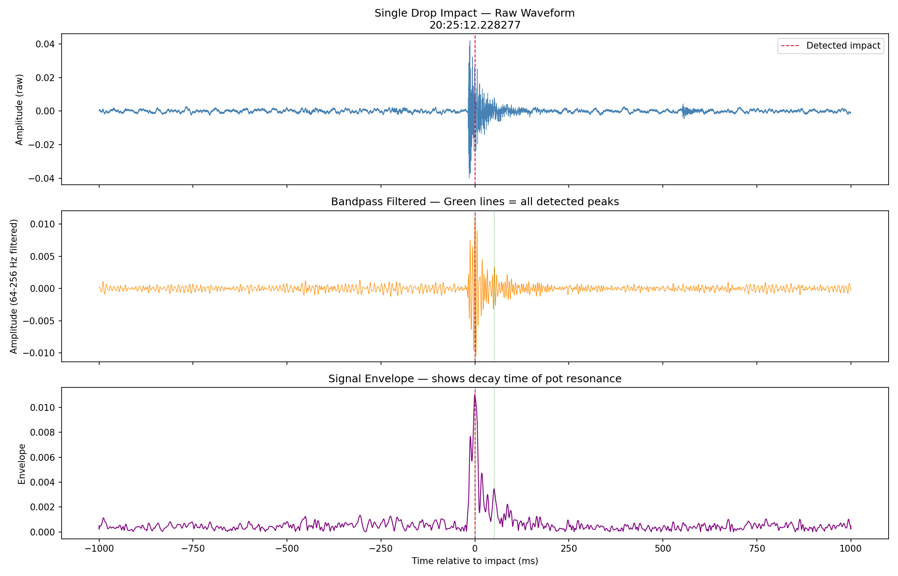